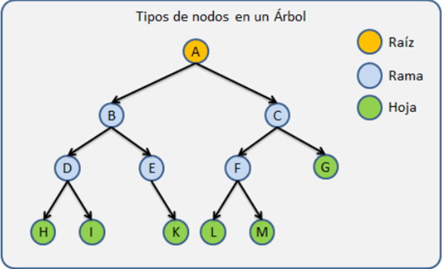
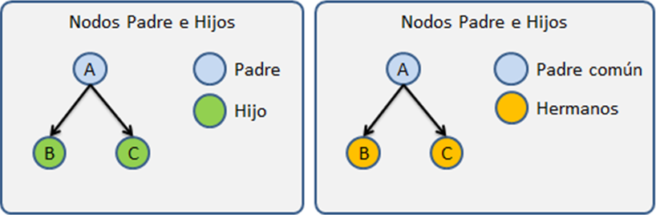
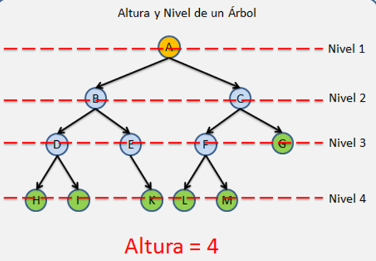
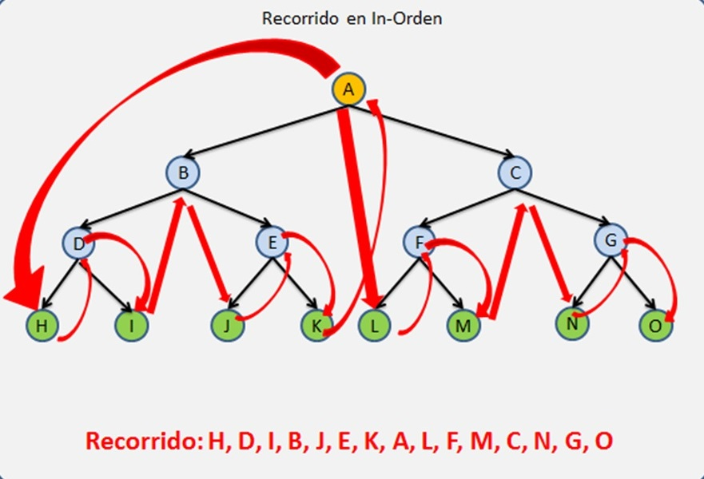
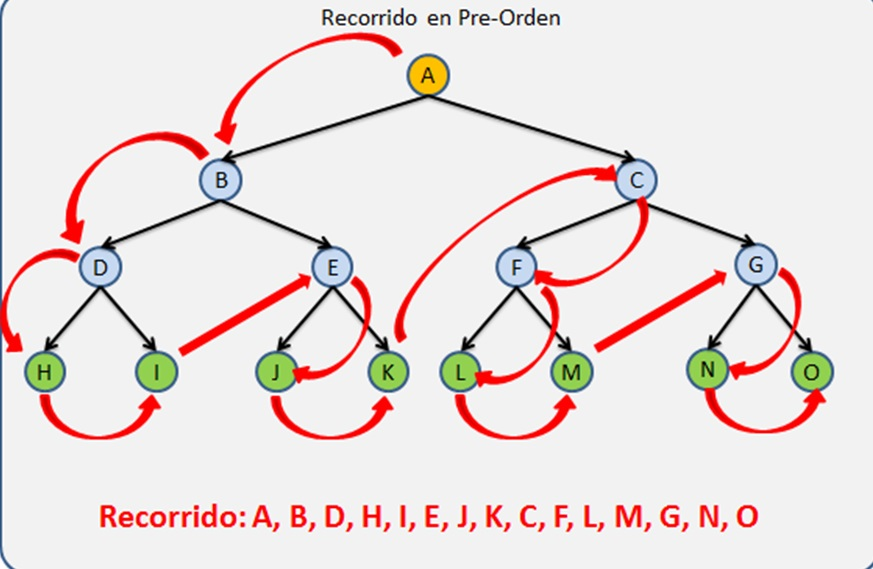
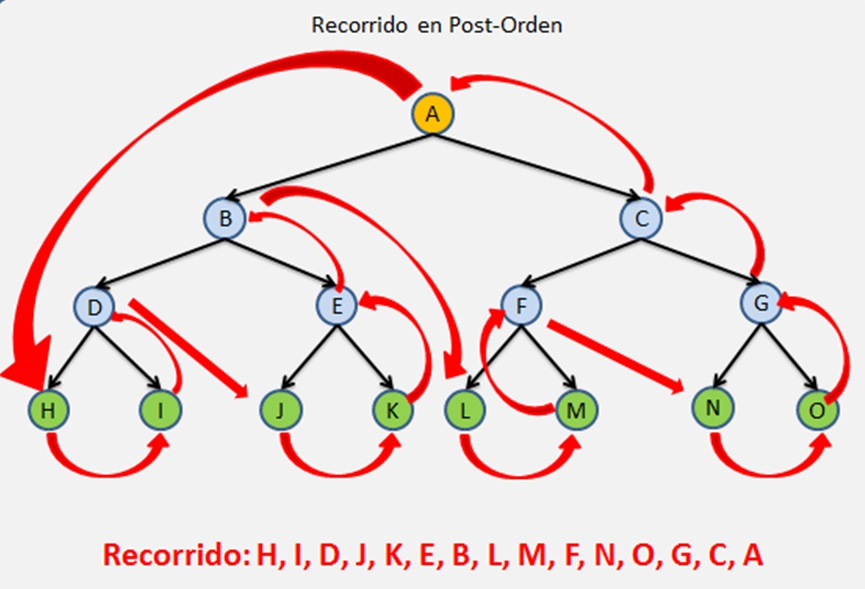

ÁRBOLES Los Árboles son las estructuras de datos mas utilizadas, pero también una de las mas complejas, Los Árboles se caracterizan por almacenar sus nodos en forma jerárquica y no en forma lineal como las Listas Ligadas, Colas,Pilas,etc., de las cuales ya hemos hablado en días pasados.   ELEMENTO DESCRIPCIÓN Nodos Se le llama Nodo a cada elemento que contiene un Árbol. Nodos raiz Se refiere al primer nodo de un Árbol Nodo Padre Son todas aquellas nodos que tiene al menos un hijo. Nodo Hijo Los hijos son todos aquellos nodos que tiene un padre Nodo Hermano Los nodos hermanos son aquellos nodos que comparte a un mismo padre en común Nodo Hoja Son todos aquellos nodos que no tienen hijos, los cuales siempre se encuentran en los extremos de la estructura. Nodo Rama Estos son todos aquellos nodos que no son la raíz y que además tiene al menos un hijo. Nivel Nos referimos como nivel a cada generación dentro del árbol. Por ejemplo, cuando a un nodo hoja le agregamos un hijo, el nodo hoja pasa a ser un nodo rama pero además el árbol crece una generación por lo que el Árbol tiene un nivel más. Cada generación tiene un número de Nivel distinto que las demás generaciones. Un árbol vacío tiene 0 niveles El nivel de la Raíz es 1 El nivel de cada nodo se calculado contando cuantos nodos existen sobre el, hasta llegar a la raíz + 1  Recorrido de arbol Los recorridos son algoritmos que nos permiten recorrer un árbol en un orden especifico, los recorridos nos pueden ayudar encontrar un nodo en el árbol, o buscar una posición determinada para insertar o eliminar un nodo. Inorden Recorre el subárbol izquierdo, luego la raíz y luego el subárbol derecho.  Preorden Primero visita la raíz, luego el subárbol izquierdo y después el subárbol derecho.  Postorden Se recorre el pos-orden cada uno de los sub-árboles y al final se recorre la raíz. 